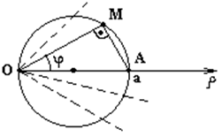

Уравнения линий в полярной системе координат

Каноническое
уравнение окружности с центром в точке (a/2,0) и радиусом a/2
–
каноническое уравнение окружности с центром в точке и
радиусом ,
Уравнение
окружности с центром в точке (a/2,0) и радиусом a/2 в полярной
системе координат
Уравнение
кривых второго порядка в полярной системе координатами
–
кривые второго порядка, если полюс находится в фокусе, полярная ось направлена
из фокуса к ближайшей вершине (для гиперболы этим уравнением определяется
только одна ветвь);
 - фокальный
параметр,
- фокальный
параметр, -
эксцентриситет кривой.
-
эксцентриситет кривой.